Hello. I am a recent graduate from the Master's in Human Computer Interaction Institute program at Carnegie Mellon University. My work is about designing meaningful digital experiences. I graduated with a Bachelor's degree in Design from the Indian Institute of Technology, Guwahati. I have worked as a User Experience Design Intern at Amazon.com and at Fractal Ink Design Studio. My background is a mix of Design, Computer Science, and Psychology. I love tinkering with art and technology. I care about making delightful user experiences and have an eye for detail.
3 years of experience with User Research, Contextual Inquiry, Product Research, Competitive Analysis, Interviews, Think Alouds, Focus Groups, Usability Evaluation, and Quantitative and Qualitative Data Analysis. Published author in India HCI, UX India, and Digital Game Research Association.
Design
4 years of experience in Visual Design, primarily focusing on User Interface Design. Skilled at condensing research to design ideas, generating Information Architecture, Wireframing concepts, and designing mock-ups and interactions. Designed UI for and shipped 16 total mobile and desktop interfaces, that are currently in the market.
Develop
High fidelity prototyping experience with HTML, CSS and Javascript. Programming experience with Python, Java and C/C++. Experience with using prototyping tools - Framer.js, Axure, Processing, Arduino and Android Studio. Basic familiarity with iOS development.
Journey
It has been an adventure!
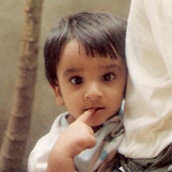
1993-2011
Grew up and schooled, Nagpur
Grew up in a beautiful small town. Learned the art of terrible jokes. Sang my first songs and read my first books. Developed a liking for comics.
2011-2015
Bachelor's in Design, IIT Guwahati
Learned to design a thing or two. Met the smartest people. Built stuff. Broke stuff. Learned to fix stuff. Designed my first product.
Kept my eyes and ears open. Got my hands dirty trying a range of UX practices. Took ownership of my projects. Worked directly with clients. Was guided by amazing mentors. Designed beautiful interfaces.
Summer 2014
UX Design Intern, Amazon.com
Practiced User Centered Design. Worked in a diverse team. Learned from the experts. Observed how the corporate giants work.
SONIFY - Graph Sonification to make visual Graphs Accessible
Graph sonification was our MHCI Capstone Project at CMU, sponsored by Bloomberg L.P. We researched accessibility in desktop computers, and found pain points in accessing visual content for people with a vision impairment. We prototyped ways of making visual graphs accessible, and built a touchscreen application to sonify visual data such that it is comprehensible to people with a vision impairment.
Our research led us to focus on helping people who are blind hear the contents of a graph through tones. Our current prototype can be seen above. The UI is completely through touch input and audio output. As the user pans left and right a tone is played that represents how high or low the graph is at that given point. People can swipe up and down to change the number of graphs. People can also chose which stock price graphs they wish to listen to (the demo video shows Microsoft Equity Graph and NASDAQ). People can change the range of dates for which they want to listen to the data (week/month/year) and zoom in and out of the graphs.
PROCESS
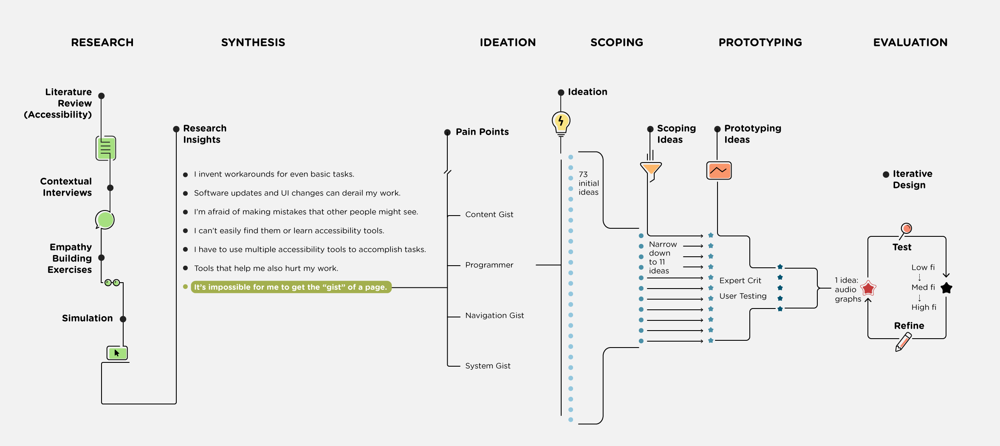
Timeline: January - August 2016
Client: Bloomberg L.P.
Mentors: Dr. Bonnie John, Richard Ram, Drew Gulley, Karen Berntsen, Gary Minnaret
TEAM
Laya Muralidharan, Felicia Alfieri, Monali Agarwal, Jacob Jorgensen, Safinah Ali. My primary role was Interaction Design. My responsibilities include user research, design, prototyping, iOS and web development. Coming from a visual design background, I mentored my team on design, interactions, and presentation. I learned immensely from my team about research, writing and development.
BACKGROUND
This is a project sponsored by Bloomberg with the goal of improving the accessibility of the Bloomberg Terminal. For the first four months we conducted user research while at Carnegie Mellon University and narrowed down the project space. We are currently designing, prototyping and developing a solution at Bloomberg's headquarters in NYC.
RESEARCH
We conducted research during a semester at Carnegie Mellon. It consisted of literature review, interviews with people with disabilities,interviews with Bloomberg stakeholders and an empathy study. Our timeline can be seen below:
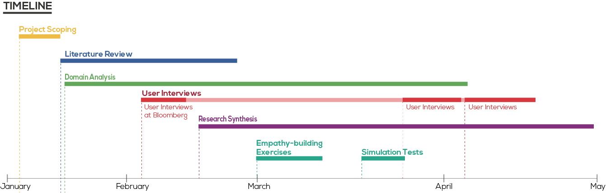
Literature Review
Our team was entirely new to the field of accessibility, so we had decades of research to review. We split up accessibility over a few domains and studied the field over about a month.
We created a secondary research report for our clients, that synthesized the majority of our findings in our literature review. We wanted to go beyond dividing disabilities into the broad categories of visual, cognitive, auditory and motor. We found that there was overlap between those four categories and the solutions that exist. Instead we broke our research into conditions, limitations and solutions. An excerpt from our report can be seen below:
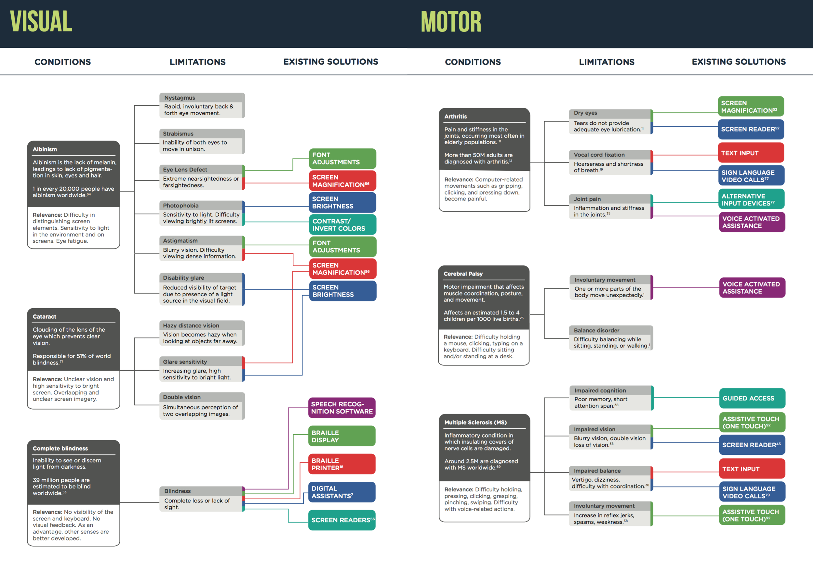
Empathy Studies
In order to gain empathy for those with disabilities and to gain a better understanding of the tools they use, we simulated a few common conditions. While empathy studies don't provide accurate insight into disability, we found it helpful to experience things from a different perspective. For example, I wore sound cancelling earplugs to simulate deafness, while using my computer for one week. I observed what I had expected - missing out on notifications. What I did not expect, however, was that I missed out on audio feedback from software such as Skype and Slack, that indicate the system state.
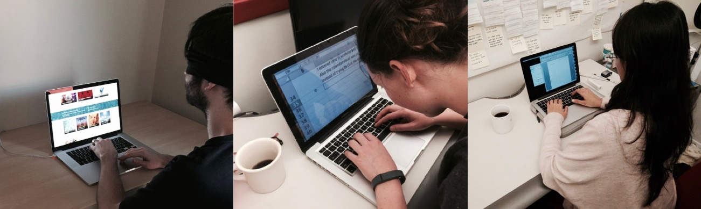
Interviews and Contextual Inquiry
Although literature review helped us get an overview of the field of accessibility, our work didn't really take off until we started meeting and interviewing people. There was a huge difference between reading about something on paper, versus hearing about very real concerns someone is facing in their day to day life. We still keep in contact with many of the people we interviewed.
We were able to initially interview or conduct a contextual inquiry with 11 participants. They were split as follows:
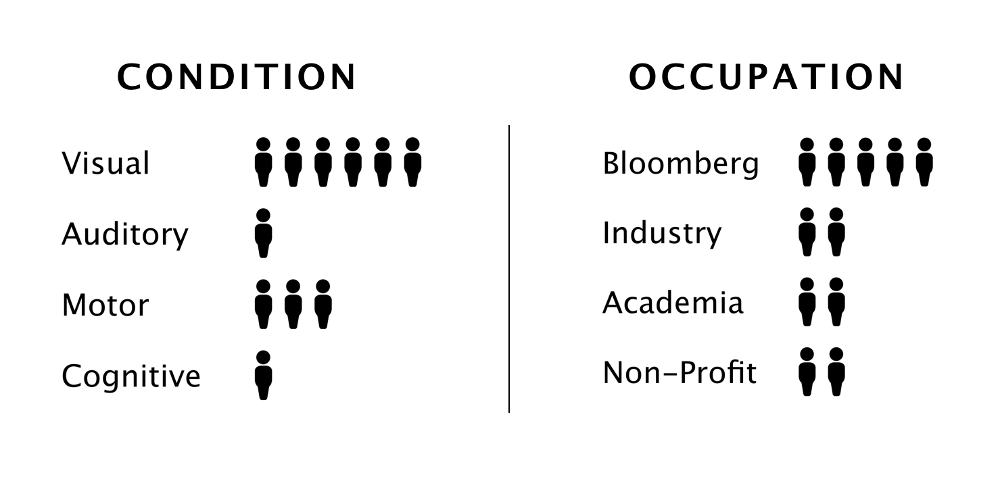
We also had the opportunity to interview key stakeholders at Bloomberg from design, engineering, diversity & inclusion, legal, human resources and sales.
Interview Synthesis
Following our interviews, we took all of our notes and looked for patterns in our interview data. We grouped our findings into categories and subcategories in a large Affinity Diagram.
Research Insights
We synthesized all of our data from our literature review and interviews and were able to come up with seven broad insights that encompassed many of the small points we consistently found in our research (written from the perspective of our users):
I invent workarounds for even basic tasks
Software updates derail my work
I am afraid of making mistakes other people might see
Even if accessibility tools exists, I can't easily find or learn to use them
I have to use multiple accessibility tools to accomplish a single task
Tools that help me also hurt my work
It's impossible for me to get the "gist" of a page
COMMUNICATING OUR FINDINGS
In order to communicate our findings effectively, we prepared and gave a presentation for our clients. We also wrote and designed a short research findings book that our clients could not only read, but also share with others at Bloomberg. We then held a visioning session with our clients in which we had them participate in the design and brainstorming process so that they could feel invested in the ideas that we generated.
BRAINSTORMING
After our visioning session we brainstormed and conducted a more specific literature review in order to narrow down our focus to one of our seven insights. Eventually we narrowed our focus on our seventh insight, "It's impossible for me get the gist of a page." By doing so, we decided to create a solution that could help those with visual impairments.
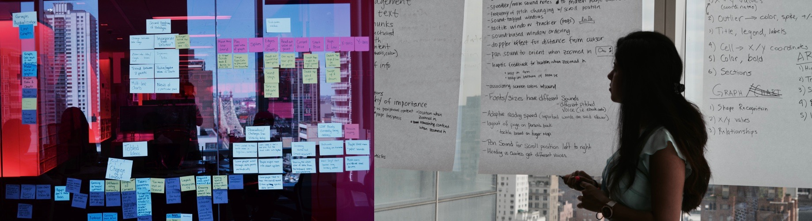
After narrowing our focus on this insight, we brainstormed even further. Eventually we narrowed down to 11 concrete ideas that had the potential to help someone with a visual impairment get the gist of the GUI, content or system status.
PROTOTYPING
Since our focus was on people with visual impairments, many of our prototypes would have to have custom audio or text-to-speech. Because of this, many of the common prototyping tools wouldn't work or would be overkill. We started by creating mock ups for each of our 11 ideas and passed them by the UX team at Bloomberg. We then created rough prototypes for five of our ideas using Keynote, paper and audio files. we then tested our prototypes with three users that were internal to Bloomberg.
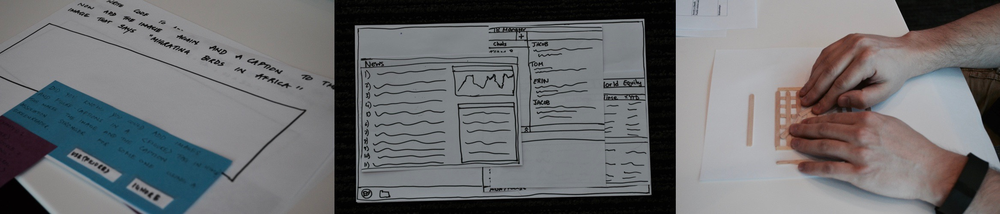
From these tests, we were able to get a feel for what was and wasn't working. After our user tests and further discussion, we decided to focus on graph sonification.
Interviews and Think-Alouds
In order to understand how charts and graphs are used by those in the finance field, we conducted interviews and "think-alouds" with around 20 participants. We interviewed four graph designers/engineers and three expert users. We followed that up with ten quick think-alouds with other Bloomberg employees. We also met with people from a local blind community who walked us through the ways they currently interact with graphs. From these interviews, we were able to get a deeper understanding of how graphs were used in the Bloomberg Terminal and in general in the blind community.
Usability Testing
For our next round of testing, we focused on user interaction. We took some time to brainstorm how we would want the user to interact with our next prototypes. We sketched out ideas and weighed our options, which you can see here:
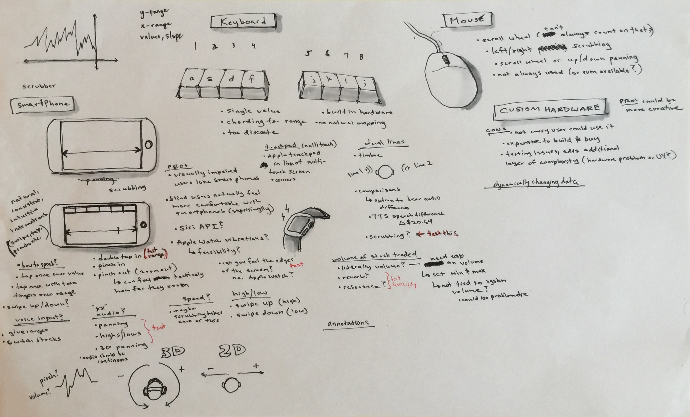
After our brainstorming session, we decided on testing a few iterations and features. In these iterations, users interacted with our prototypes through keyboard commands or scrubbing back and forth through a graph via a trackpad. We sought to answer the following questions from these tests:
Which interaction gives participants the most accurate interpretation of a graph?
Which audio sounds are most pleasing?
Which audio sounds lead to the most accurate interpretations of a graph?
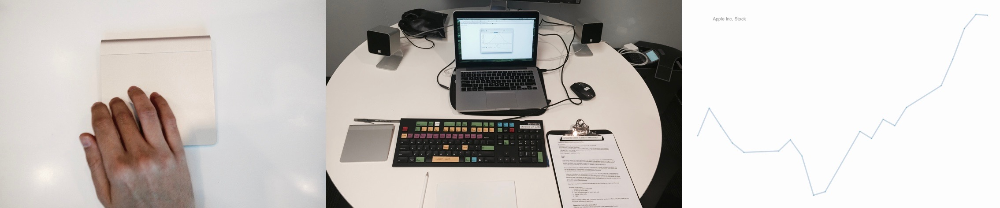
For this round of user testing, I built the keyboard interaction to make an HTML web-app with sound. I programmed key patterns in the keys of the Bloomberg keyboard, where each key signified a specific value and certain keys played the stock chart patterns. I wanted to evaluate the interaction of the input medium, and learnability of the data when presented in sound. Our second prototype was built with a track-pad interaction where the user could crub across the device to listen to stock patterns. When we completed our prototypes, we were able to use the usability lab at Bloomberg to test with 6 participants (plus an additional participant for a pilot round).
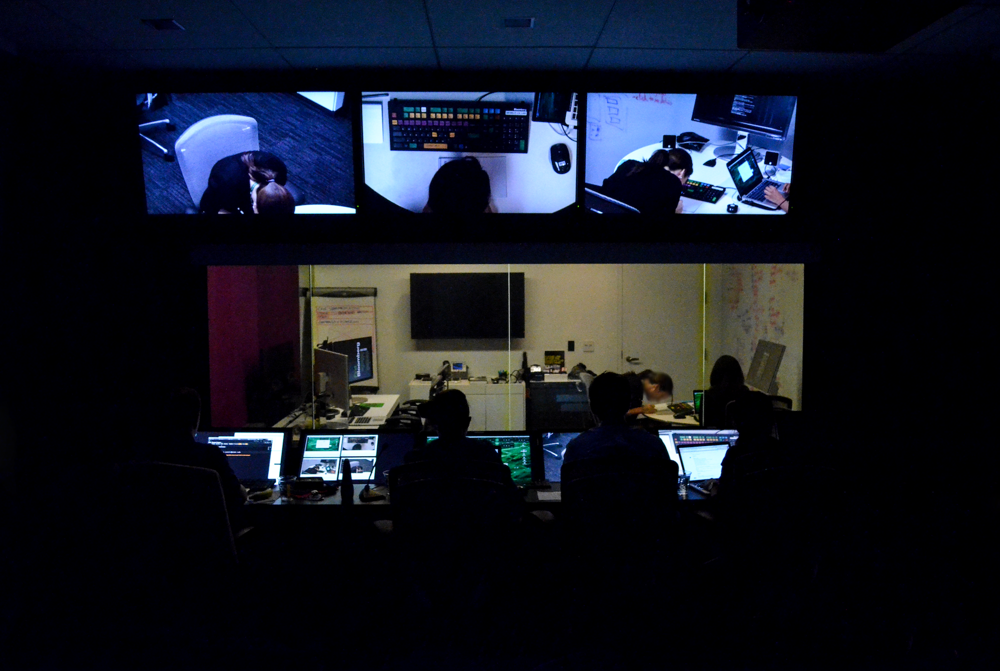
We found out that both the interactions - keyboard and scrubbing had their advantages and disadvantages. While partcipants preferred using the keyboard interaction due to familiarity and discrete data points, they could recreate graphs more accurately using the scrubbing interface. Participants often were confused about picking up their finger or wondering when they were at the end of the graph or not. We decided to pick the best of both the prototypes and make a combination - an interaction that provides discrete discrete data points, as well as gives full user control. We decided to move from a trackpad to a smartphone touch interface. Moving from a relative positioning system (trackpad) to an absolute positioning system (touchscreen) we could overcome these shortcomings.
We also found that text-to-speech output took longer to get the gist of the graph, but it was quite accurate. By combining the strengths we saw in each iteration, we moved on to a touchscreen prototype.
Prototype Progress
Based on our insights from earlier prototyping sessions, we built an iOS prototype app for both iPhone and iPad. In our first two round of testing with blind participants, we learned that they prefer using the iPhone interface because they have a better sense of space on it, and find the iPad very effort-full to scrub. After 4 rounds of user testing, and iterating, we went through several interactions and gestures. We also added features, such as multi-line interactions, and panning sounds based on the feedback we received from users.
One challenge we faced while designing interactions was the clash we were having with existing voice-over interactions. We resolved these in drawing parallels from Apple's voice-over interactions, and using similar gestures. For example, Apple uses a 3-finger tap to get the summary of an element. Another tech challenge we faced was overriding the voice-over control on the application. We initially designed the application such that voice over does not work in it. But this decision received negative feedback as people with a vision impairment rely on voice over for all interactions. Hence we re-designed the application such that voice-over works in the top half of the screen, which contains all the user control, and the bottom half uses the scrubbing gesture for getting the gist of the graph. We designed the three finger interaction to provide a quick summary of the graph.
Our prototype is at completion and we are in the process of making it freely available to everyone.
From our user research, we had learned that users with a vision impairment are often helped by other sighted users in performing desktop tasks, especially when there are errors. For this purpose, we decided to build a visual interface to the application. This could also benefit partially sighted users and could extend our application to fully sighted users as well. Some iterations of the visual interface can be seen below.
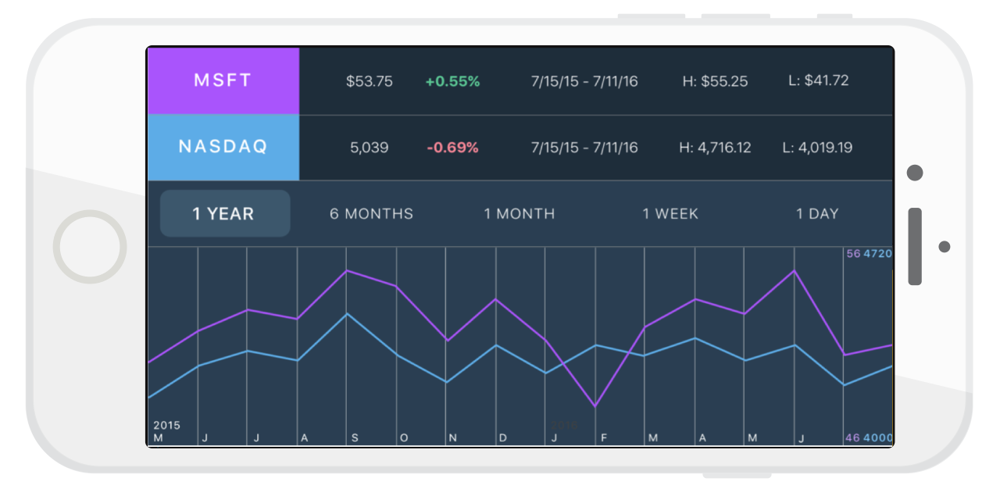
Visual Interface iteration 1
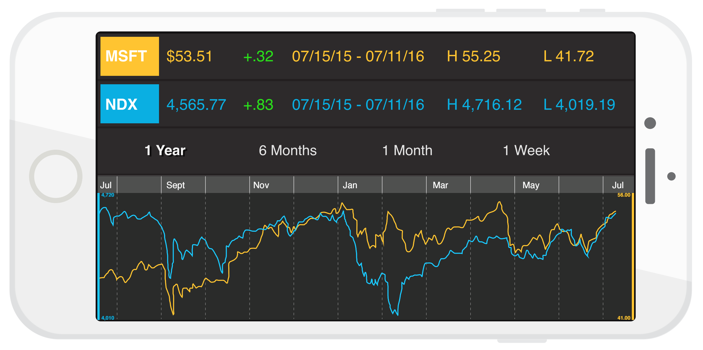
Visual Interface iteration 2
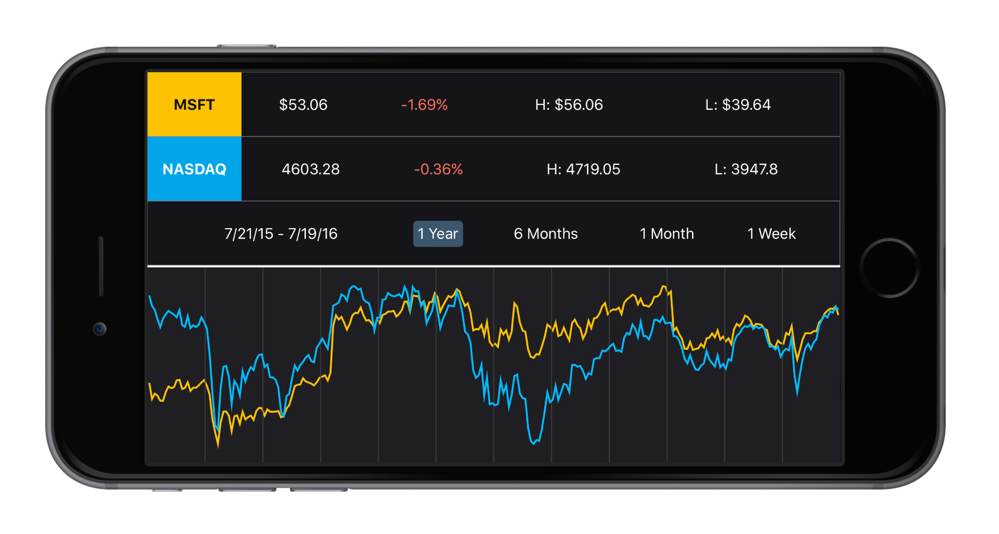
Visual Interface iteration 3
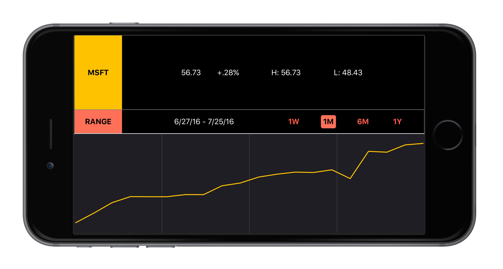
Visual Interface iteration 4
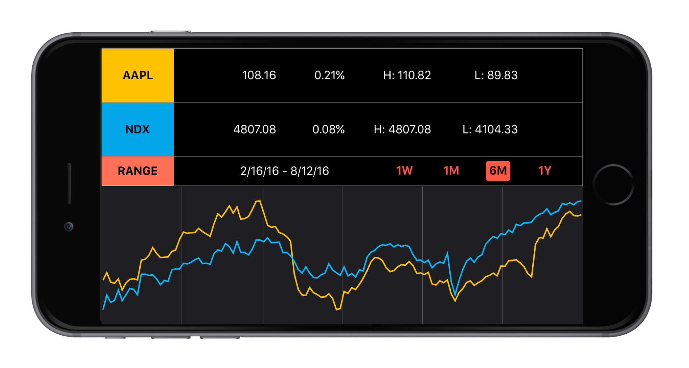
Visual Interface - final iteration
Sonify has been completely programmed in Swift, in the XCode 8 integrated development environment. Sonfiy makes use of AudioKit, an audio synthesis, processing, and analysis platform for OS X, iOS, and tvOS. Sonify is pulling data from Kibot.com, historical intraday market data for stocks, indexes and ETFs.
Interactions
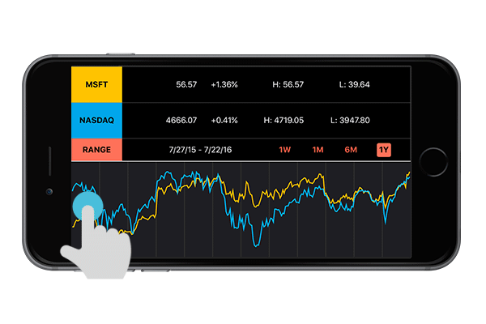
Open the app and drag a finger left and right across the bottom half of the phone screen to play a sonified line. The horizontal movement traverses X-values (dates), and corresponding Y-values (stock prices) are represented through rising and falling pitch.
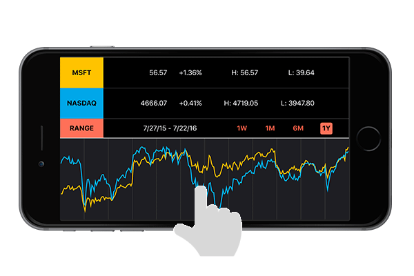
Tap anywhere on the graph to hear the X and Y values at that point.
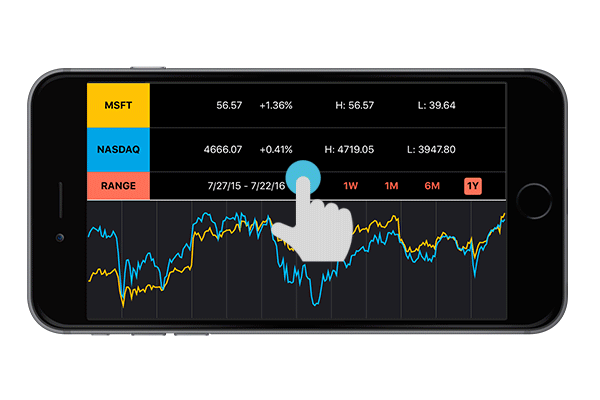
Interact with the top half of the screen to navigate a menu that is compatible with VoiceOver, Apple's in-built screen reader. Use VoiceOver gestures to navigate the menu to access summary information about the graph, including current price, highs and lows, and date range.
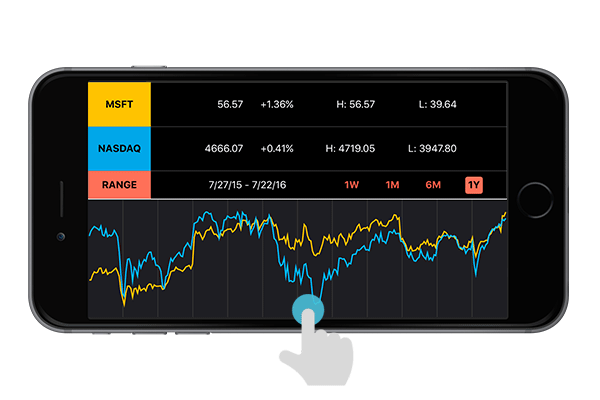
Swipe down in the graph section to switch to a second line. Swipe down again to access both lines simultaneously. Each line is represented by a different sound, to distinguish between the two for comparison.
Evaluation
We tested our current prototype with four blind users so far with positive results. We received constructive feedback from the users about features that were difficult to understand, and features they found very useful. One user quote that particularly stood out was:
"It paints a better picture than gong through numbers. I haven't seen graphs in 20 years... but then, by using this app, last time and this time, my ears and my brain is beginning to be like, oh, much easier."
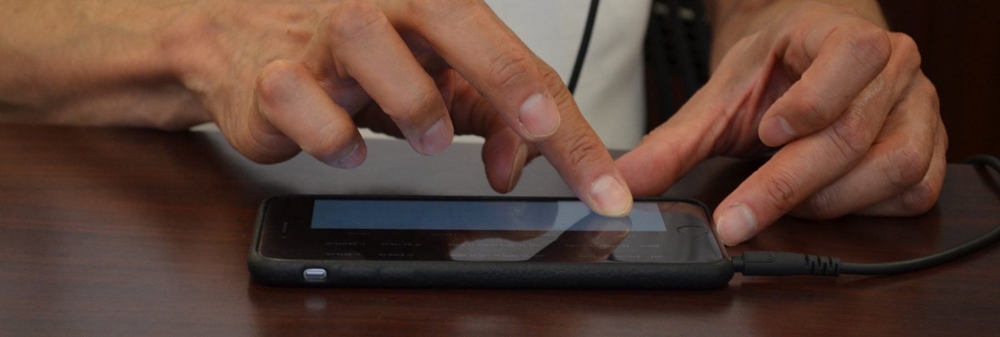
There are 39 million people worldwide that are estimated to be blind, and we know of only 7 blind stock traders in the world. We aren't improving a product used by thousands, but we are creating an opportunity for millions of people to use graphs.
UX Design for Kindle Content Editor - Amazon
The project was carried out as a part of my UX Design Internship at Amazon. I worked on the User Experience and evaluation of a Kindle Content Editor tool. Details of the product are omitted due to a Non-Disclosure Agreement.
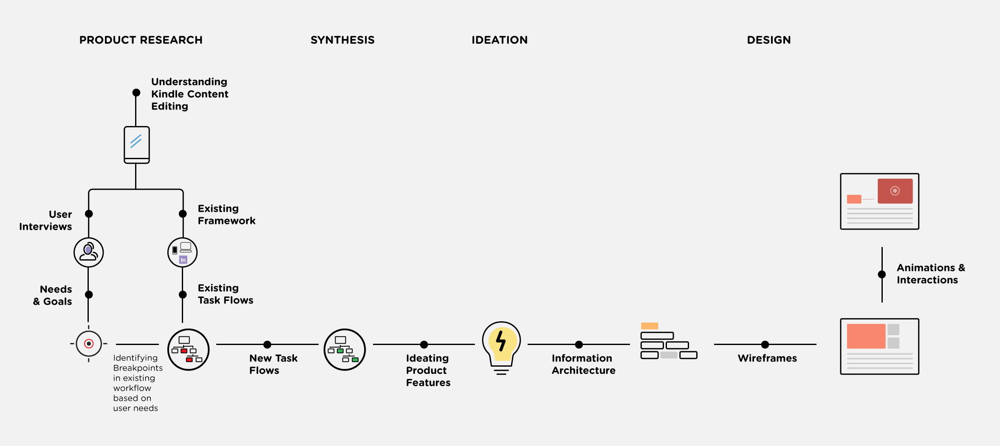
Timeline: May - July 2014
Employer: Amazon.com
Mentor: Mr. Sridhar Godavarthy, senior Software Development Engineer, amazon.com
The project involved development of the User Experience of a desktop based authoring tool for creating, editing and enriching kindle content. Followed the Amazon User Centered Design methodology to deliver UX specification of the tool. Work involved Usability Evaluation, User Research, Persona building, Scenarios, User Journeys, Wireframing, and Visual Design.
TEAM
The project was carried out in a multi-disciplinary team of 6 software developers, 1 operator, and 2 interaction designers. I was the interaction designer for this project. Additional members joined the team after the end of my internship.
PROCESS
I began by understanding the process of Kindle Content Editing. This involved attending tutorial sessions given to operators, interviewing experts, reading product specifications and interviewing the users. Amazon has a heavy focus on User Centered Design. I conducted contextual interviews, and made 4 user personas for the product. User needs and goals were evaluated. I also generated several sample use cases for the product.
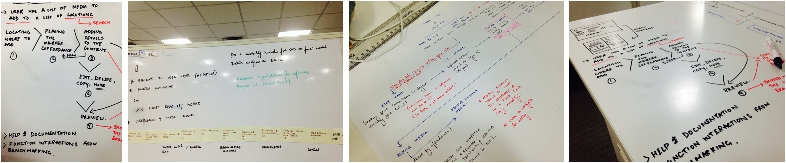
I further made task flows of the existing products (internal and external) used for Kindle Content Editing. Based on user interview need-finding, I marked breakpoints in these task flows, where existing tools failed to meet the user needs.
I ideated on new and changed product features. I presented these and went through two rounds of critique for these ideas. I further iterated features after each round. New task-flows were generated for each use case identified.
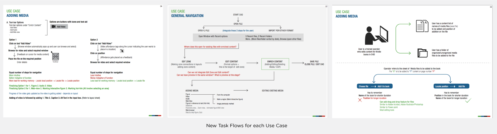
I paper-prototyped these ideas and tested them with users. I conducted think-aloud sessions with these low-fidelity prototypes and iterated on them. I created high fidelity clickable wireframes and tested them with users. Based on test findings, I made changes in every successive iteration. I iterated through 3 rounds of wireframes. I delivered a full UX specification document with wireframes, layouts and mock-ups.
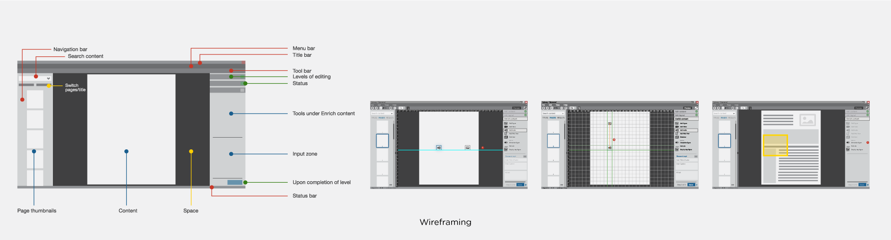
No final product screens or names are included here due to a Non-Disclosure Agreement.
WHAT I LEARNED
I learned the User Centered Design methodology followed at Amazon, that I find useful to refer back to in my work. I learned working directly with developers and speaking the prototyping language for seamless communication. I learned periodic work presentation for critique sessions. The biggest challenge for the project was gaining access to users for contextual interviews.
I was guided by an amazing mentor, who taught me a great deal about product based industry as well as designing desktop products. I was given a full-time employment opportunity at Amazon at the completion of my internship.
Fractal Ink Design Studio
I worked as a User Experience Design intern at Fractal Ink Design Studio - Empaneled Design Partners, Microsoft. I worked on the interface design of 1 Android tablet and mobile app, a series of 6 mobile applications for Samsung (Samsung Club), and 1 Windows-8 mobile app. Projects involved User Journeys, Info Architecture, Wireframes, and Visual Design.
Timeline: May - July 2013
Client: Samsung, ICICI, Hungama, TCS
Mentors: Tanay Kumar (CEO, Co-founder & Creative Director at FIDS), Priyanka Agarwal (Co-founder & Director - User Experience)
HUNGAMA - ANDROID TABLET APP
I worked on the UI design of the Hungama Android Tablet Application. My role included understanding client requirements, building an information architecture, wireframing and interface design. I was guided by Sunny Tarke, Sr. Designer, Fractal Ink for this project.
I worked on the UX of a series of 6 mobile applications by Samsung called the Samsung Hub. My role included understanding the target user, market analysis of similar 'family applications', building an information architecture and wireframing design concepts. I was guided by Priyanka Agarwal, Co-founder & Director of User Experience, Fractal Ink. I learned Samsung's design style and UI guidelines. I iterated on several version of wireframes and layouts before we finalized the design.
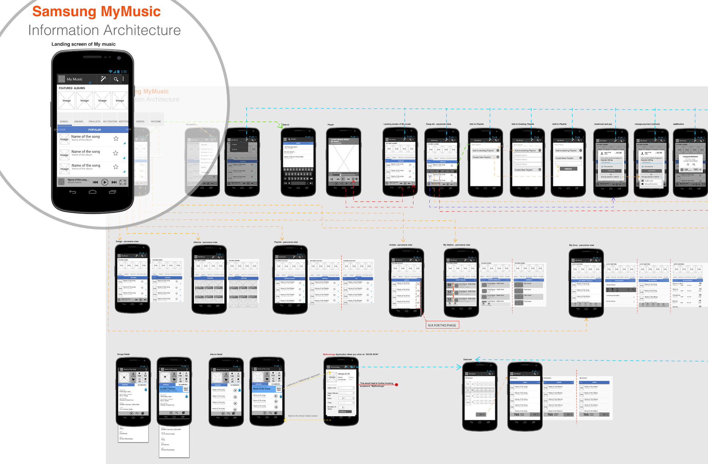
Samsung Club Information Architecture
BOLLYWOOD HUNGAMA - WINDOWS 8 APP
I worked on the interface design of Windows 8 mobile application (Horizontal Scrolling) for Bollywood Hungama. I got to learn the Window-8 Metro UI design style. My responsibilities involved producing wireframes and visual design concepts for the applications.
My experience with Fractal Ink Design Studio taught me to work directly with clients and handle requirements. I learned working with app developers and understanding asset requirements. I got to work with senior designers who taught me a great deal about interface design. I got to work on Android and Windows 8 applications, hence learning guidelines of different platforms. I also learned the Metro-UI design guidelines by working on Windows 8 apps. I was guided by amazing mentors, who had the best advice on design, food and life.
The Team
Techniche 2014
I was appointed the Brand Communications and Creatives Lead for Techniche 2014 - The Annual Techno-Management Festival of IIT Guwahati. I was responsible for the branding and overall design requirements of Techniche 2014, the annual techno-management festival of IIT Guwahati that observed a participation of 30,000 students. I lead a team of 67 designers, event managers, and marketing executives. I mentored my team to designed a website, promotional video, Android application, a series of posters, booklets, hoardings, and other publicity material.
Main Event Poster - Techniche 2014
Timeline: Sept 2013 - Sept 2014
Position: Brand Communications and Creatives Lead, Techniche 2014
Team: Lead a team of 67 designers, event managers, and marketing executives.
Techniche is a 3-day annual techno-management festival of IIT Guwahati that includes several competitions, workshops, tech-events, a marathon, an international school championship, an MUN, a conclave, exhibitions and social events. I began working for Techniche as a part of the design team in 2011. 1.5 years later, I was appointed the Brand Communications and Creatives Lead for the festival. I headed a team of 67 core team members, which included 12 competent designers, who I appointed, mentored and closely worked with to brand the 14th edition of Techniche. I also handled all the social media handles and web presence of the festival.
Promotional Video of Techniche 2014
My team and I designed promotional videos for the festival as well as individual events in the festival. Our main promotional video was the highest watched festival promotional video (7,400+ views) among all college events in 2014. Creating videos involved understanding the audience, gathering content, creating story-boards, video recording and editing, animation and sound design.
I lead Techniche's branding and web presence, which increased immensely during the year. We observed a 40,000 increase in likes on our Facebook page throughout the year. We were featured in several magazines and newspapers across the country. In order to gain traction and attract participation, I created a brand value for Techniche that was relevant to the target audience, as well as relevant to current events. To this purpose I designed several creatives and illustrations that gained publicity through social media.
My team also created a website (which gained heavy traffic close to the festival) and an Android mobile application (which received over 1000 downloads) for Techniche 2014.
We designed event posters for each event at the festival. We received content and requirements from the events and media team and transformed it to visual graphics. 1500+ copies of these posters designed by me were put up in campuses across the country.
Event Posters
Apart from all design requirements of the festival, I was also responsible for strengthening team spirit. To this purpose, I created several illustrations and installations around the campus to keep the team spirit alive.
Heading the festival has been one of my biggest learning experiences. Not only was I responsible for creating quality designs, but I was also responsible for managing several individuals and bringing out the best work in them. I was extremely fortunate to work with 12 amazing designers who made the festival possible. I learned audience specific branding of an event. I learned managing social media for an event. Lastly, I learned resolving conflicts and taking on multiple roles like publicity, event management and videography.
Revamping the University Health Services
This was a 7-week project with University Health Services (UHS) at CMU. It was the core project of our HCI research methods course and was meant to walk us through the process of Contextual Design with a real client.
UHS approached us with a multitude of problems they were facing such as poor student inflow and lack of awareness of facilities. After research and synthesis, we identified long waiting times to be a major pain point for students and proposed a wait time estimator for streamlining the flow of students into UHS.
Timeline: August - October 2015
Client: University Health Services, Carnegie Mellon University
Mentors: Prof. Jim Morris, Prof. Amy Ogan
Team
I worked in a team of 5 students from the CMU MHCI program: Jae Won Kim, Jerome Zhong, Michael Anderson, Samarth Bahuguna and Safinah Ali. We all come from a different backgrounds and areas of expertise. My responsibilities included contextual interviews, synthesis, affinity diagram, visioning, ideation and design.
Interviews
Since observing doctors, nurses and staff at UHS was not feasible, our team of 5 conducted student interviews. Our interviewees included 6 students who had previously been to UHS and a Peer Health Advocate (PHA), which is a student position that works with UHS for organizing health education events.
Modelling and Affinity Diagram
Through team sessions after each interview, we built flow, sequence, and cultural models for each interviewee. We then consolidated the corresponding models into a single flow, sequence and cultural model representing the UHS system. Additionally, we de-constructed them into atomic pieces, and rebundled responsibilities and actions into more logical and meaningful groups.
Using interview notes, we also built an affinity diagram for an overview of problems being faced by students and UHS.
Walking the Wall
This step involved walking past these models and studying them individually and in groups of two. Design ideas, key issues and unanswered questions were put up on the models to drive subsequent design decisions.
Visioning
Using the issues and ideas obtained from walking the wall, we proposed visions for a better state of affairs at UHS. Furthermore, we evaluated each vision on the basis of the data collected, technological feasibility and organizational fit.
Storyboard and Speed-dating
The most promising concepts were sketched into storyboards. These were tested with the students we interviewed in the beginning through speed dating. Their reactions and feedback was used to further refine some of these ideas which was followed by more testing.
Final Concept
After several iterations of storyboards, we proposed a concept to address long waiting times at UHS. Our solution comprised of a wait time estimation system that would keep track of waiting times for both scheduled and walk-in appointments. The wait time estimates would be displayed both at UHS and on their website. This is the final concept poster we presented to the Health Services Officials. These are not designs, but concept presentation.
The concept was received well by the UHS officials. They expressed concerns about the accuracy of wait time estimates. We resolved these concerns by explaining how live updating the system is feasible and effective.
DRAWING ROBOT
The Drawing Robot was my final project for the class "Gadgets, Sensors and Activity Recognition. It draws out different shapes and patterns that the computer feeds in it. The robot has been fabricated and programmed completely by me as a part of the course.
Timeline: March - April 2016
Course: Gadgets, Sensors and Activity Recognition
Mentors: Prof. Scott Hudson
BACKGROUND
The project prompt for the class was to make a fully functional gadget, that does something 'cool'. I decided to make the Drawing Robot because I wanted to practice my fabrication as well as programming skills, while building something useful. Coming from a Design background, and gaining experience in computer science, mechanizing art has always fascinated me. I wanted to make something that can draw using any medium on any flat surface. So, I had the idea of making a robot that moves on a surface on wheels and draws.
PROTOTYPING AND FUNCTIONING
The robot consists of two main segments, the body and the circuit. The body consists of wheels that the robot moves on, a chassis that mounts the circuit, holders for batteries, and a holder for the ball-bearing. Additionally, it consists of a level that helps lift and drop the drawing pen. The body has been fully fabricated using my personal 3D printer, that I built as a part of the class "Advanced Fabrication Techniques". The body has been put together using machine screws and glue guns.
The hardware consists of two motors that are attached to the wheels. There is an additional mini-Servo motor attached to the level that helps lift and drop the pen. Additionally there is a ball bearing on the bottom that makes the robot's motion smooth as well as help balance the weight. There are 4 AA batteries on the bottom that power the robot.
The bot has been programmed to move on a certain path. This path is the shape of the required drawing. In between the robot body is a drawing pen that the lever picks and drops to draw at different locations.
The project was presented in class and received appreciation. In the second module, I used a Japanese Brush Pen to draw, and changed the lever level to alter pen pressure. This created a calligraphic effect to the drawing with varying width. As an extension of this project, I am teaching the robot to draw with sand.
Savour - Designing an Experience around Food and Travel
Savour is a food discovery and comprehension mobile application, designed as a part of our 5th semester’s Interaction Design course’s project. The course involved us carrying out every step in the design process of a product up to making low fidelity mock-ups. The interaction process involved user research, need-finding, interviews, personas, scenarios, card sorting, information architecture, prototyping, wireframing, visual design and usability evaluation.
LAs a part of our course, Interaction Design, we wanted to explore the domain of food and travel, and come up with a service that makes the food experience while traveling easier. We started by identifying the problem space, the stakeholders involved, and the needs of the stakeholders. We identified that a food exploration does not just influence the explorer, but a variety of stakeholders like local people, businesses, hotel owners, and other travelers. We made a map that categorizes these stakeholders in potential ‘Users’, ‘Affected’, and ‘Influential’ for our service.
We further went on to draw an empathy map of the user, which involved understanding what each stakeholder thought, saw, said, did and heard about the domain, which was food in a new location here. We also identified the activities that these users carry out in a particular environment and the objects these interactions include. We further explored what pains and gains these interactions involved.
USER RESEARCH
We further made personas of the target users for our service. We observed travelers find food and interviewed them. After conducting 8 contextual inquiries, we synthesized our data into key findings, and break points in interactions. This initial exploration gave us a good idea of who the user is and what some of the pain points in food exploration were. For example, we learned that language is a huge barrier in finding food, people rely on other travelers’ reviews, and that people unknowingly settle for dishes similar to the dishes they have had before. Through competitive analysis we realized how digital applications in the market lack personalization, and there lies an opportunity for us to add that as a feature in our service. We also realized that drawing parallels from food items makes people identify food items quicker and better.
User Persona
Interviews
Research Synthesis
PROTOTYPING
Low-fidelity wireframes
Post our research synthesis, we identified gaps in food discovery in a new area - language, mobility, comfort; and opportunity in the domain - personalization, drawing parallels from food the travelers have had before, user control and language compatibility. One thing we learned from our user interviews was that travelers dislike carrying an additional device while they move around, which made us want to use a device that already exists in their environment - their mobile phone. We translated what we learned from our research synthesis to product features, such as - translation of menu cards, listing ingredients in food, personalized profile page with details about preferences and allergy, using OCR and translating menu card descriptions on photographs, and correlating food descriptions to previously consumed food.
We used Balsamiq mock-up to quickly low fidelity prototype our ideas. We then tested these ideas with users, by asking them to think aloud while using these wireframes to do pre-defined tasks. One challenge we faced was to define user tasks, since this was an exploration service. Hence we left some space in the task descriptions for the users to explore and make decisions.
Styling
Styling the application involved several visual design decisions. We wanted the typography to be friendly and casual, reflecting the exploratory nature of our target audience. We also chose a color palette that resembled the colors of spice - black, red, yellow, and green. This color palette also gave us sufficient contrast and variety to work with. We tried several logo concepts that combine the idea of travel and food, that included the use of cutlery and crockery, and the use of pins or locators. After several iterations we narrows down on an icon that symbolized food equipment, and also hides a locator icon within it. For the product itself, we used the iOS 7 guidelines and the color scheme that we had established for the application.
User Interfaces
The Cracked Egg
I worked at the Asad Firdos Design Studio to design and assemble a furniture product. The product developed was an egg chair. The project involved product conceptualisation, prototyping, ergonomics, manufacturing techniques, moulding and casting processes, jointing, cushioning, painting and finishing.
Timeline: Summer 2013
Role: Product Design Intern
Mentor: Asad Firsdosy, Founder, Firdos Design Studio
Conceptualization
The concept behind the chair is the egg shell cavity. I wanted to develop a sitting place in which you can get cozy into your own private shell, this ignited the idea of something exactly similar that nature has given us, an egg shell. What attracted me was the unique way in which an egg cracks open. Also, sitting in an egg always fascinated me.
Prototyping
I built a scaled down prototype of the model was developed with wires and paper coating. Dimensions were decided after a study of human body dimensions. Principles of ergonomics played a huge role in product details and ratio. The prototype served as a blueprint for the final product design.
Metal Framing and Roping
For making a clay structure, an initial metal frame was welded. The frame was then wrapped in ropes to hold the clay. The jute roped were woven with synthetic fiber ropes.
Clay mold and Plaster of Paris
The round shaper of the egg was made in clay with an inner metal and rope framework. To make the mold of the final egg, plaster of paris was coated on the clay. The PoP was separated by metal plates for easy separation from the clay as it dried. Different parts of the PoP were numbered and pulled out to have a set of mold pieces.
Casting in moulds: Glass fibre re-enforced plastic was used for casting. The PoP moulds were used for structure.
Jointing and Cushioning
Final Product after finishing
What I learned
This project taught me to take risks. It was a time and stamina intensive project and I ventured into a domain I had no expertise in. I learned from the artists, carpenters and fabric designers around me. I got comfortable working in a workshop. Seeing the chair evolve from a concept to a product and being used was a joyful experience.
The Gender Gap
This information visualization project was carried out as a part of the elective course, Information Visualization. I designed graphics to visualise the sex ratio of urban and rural India over the years. I further made an Illustrator script to visualize a similar data from every state in the country.
Timeline: December 2015
Course: Information Visualization
Mentors: Prof. Prasad Bokil
Background
Decades of sex determination tests and female foeticide that has acquired genocide proportions are finally catching up with states in India. The decline in child sex ratio in India is evident by comparing the census figures. In 1991, the figure was 947 girls to 1000 boys. Ten years later it had fallen to 927 girls for 1000 boys. This is alarming. More than we realize. An imbalance in gender ration, can lead to severe repercussions for the society. Moreover, these figures depict a discriminatory history against females, that I felt compelled to bring to light. As a part of my elective course, Information Visualization, I chose to pick a socially relevant topic, and best use visualization to bring to light the gender divide of the country.
Process
The course taught me several information visualization techniques and which ones work well for specific kinds of data. I decided to chose a dataset with multiple dimensions, in order to learn multi-level data visualization. The data set included gender rations (number of female citizens for every 1000 male citizens) in urban and rural areas from 2005 to 2011. There was no data for the number of trans-gender citizens.
I iterated on several layouts to visualize this data. We went through several rounds of critique in the class and made improvements and increments in the iterations. Some initial iterations can be seen here:
I finally settled on a circular layout owing to the multi-level data. I wanted to depict the 'gap' which is why I used a 'part of a whole' technique, where the number of female citizens are shown as a part of the full circle of '1000' male citizens. The colors were used to show a gradient of alarm, while pointing out extremes. I also used a contrasting green for rare anomalies for data that stands out. For example, the state of Chhatisgarh has a gender ration higher than 1000. I used visual outlines of gender symbols and states for visual depiction of the concept.
I have, also further worked on creating custom illustrator scripts (only compatible with CS6) for visualizing data from any state. Contact me for access to the script.
Spark - Ignite Your Mind
Spark is a monthly magazine by Qureeus Eduventures that brings puzzles, thought experiments, articles, activities, math-athons and games to high school children. My responsibility included completely designing the layout and visual elements of the newsletter. I also co-created the content of the magazine, and developed strategies for best presenting the content to keep make it an enjoyable learning experience.
Spark was made with an intention of making learning fun. The idea was to include puzzles, games and brainteasers for high school children. We wished to include math and logic concepts, and teach strategy through solving these. The magazine was distributed in schools in New Delhi as a non-coursework monthly newsletter.
I was approached by the founder for Qureeus Eduventures to assist them in desiging the monthly newsletter. I worked with the team for creating content, finding/making puzzles and suggesting best ways to present these.
I worked with several iterations of layout design for the magazine. I started benchmarking with other magazines in the market (Highlight, Disney, Nat-Geo, Kids, Twinkle Star) and listed what works for them and what does not. I had the privilege of interviewing an avid high school magazine reader, and run my layouts by them. I conducted a think-aloud session with them for each iteration of the layout and made changes in the next iteration.
Early Iterations of Layout Design
WHAT I LEARNED
I worked in a small team of 3, and learned to put on multiple hats. I helped with content as well as distribution, which were new domains for me. I learned techniques and practices of print design. I learned a great deal about learning and games through my team.
Two editions of Spark have been distributed in schools in New Delhi and received a positive feedback. We are in the process of creating an e-magazine and online subscription process for further editions.
Interactive Art and Computational Design
For the last 8 months, I have been experimenting with computational design to become a better programmer. I did several independent projects where I used different programming environments to create some form of interactive art. I made a game, a twitterbot, map visualizations, a TSNE grid of visuals, a star-gazing application and a couple of drawing software.
Know Your Emoji is a text based infinite runner obstacle game. The player avatar has to jump obstacles to collect points. These obstacles are randomly selected emoji from an emoji library of 850 icons. To be able to jump, the player enters the name of the emoji. If the emoji is correctly identified, the text returned results in jumping, if not, the player collides with the obstacle and dies. With this game I wished to explore the different perceptions of visual emoji.
I play-tested and refined game mechanics like speed, gravity in jumping and distances to make it smooth. It was interesting to see how some players thought of some icons as very different from what their tag actually was. One player also commented not the vast variety there is in emoji that they hadn’t noticed before. I used the Phaser js game library. A future iteration could involve allowing players to make custom paths and draw picture stories, and having other players play with these paths. Source code
Growing album - Image dataset visualization
Growing album is a video of 11k album covers growing in saturation and complexity. The idea is to show a ‘growth pattern’ of sorts in album cover design. I gained access to a beautiful data set of 1 million audio record covers. I first cleaned the image-set to remove all he junk images. Then I used ofxTSNE algorithm by Gene Kogan to make a grid of these covers sorting the visually similar images. I did multiple small grids with sets of images from the big image-set. This is the TSNE grid I got from all the images.
I recognized several visual patterns in these album cover designs. There were shape patterns like circular disks. Several album covers had a group of people, most commonly the band members, sometimes the crowd. Some audio album covers had a single person with a guitar or another musical instrument. A group of images were just very intricate designs or ornate patterns. It was interesting to observe the change in lighting in different album covers.
I used average pixel color variation from the median color of the image, and used this standard deviation measure to determine the more complex images vs the less complex. Another sorting I did was based on the image saturation. This was interesting because I saw a pattern in genres when I did the saturation sorting. A lot of classical music and jazz appeared in the less saturated images. A lot of Jazz also appeared in the night images. A lot of international music, like Indian or Japanese music appeared in the most saturated brackets. I then arranged these images in a video and associated the Shepard sound note to them, to produce a progressive music effect, to show an increase. I want to, in the future run an image search on these albums, figure out their timespan and genre, and find patterns in these. This is an interesting image set that I continue to play with. Source code
Meteorite Strike data visualized on map
I took a meteorite strike dataset and wanted to visualize it on a map. The data was especially intriguing to me, since meteorite strikes are not something we actively thing about. I wanted to portray through a visualization that it actually happens, and the impact could be major. For my first visualization I used a simple visualization of strike locations on a map. I used Leaflet-js plug-in to implement this. I especially made use of Ingrid’s workshop on map visualization. I used the watercolor map tiles by Stamen Design.
The visualizations places all the meteorite strikes at their location on the map. In addition to that, one can click on each of the points to see the place of the name of the strike. Source code
Paper planes - Twitter bot
Paper planes is a Twitter bot that tells the story of paper planes migrating to the moon. The bot generates an image of randomly placed paper planes flying east. These images have a narrative attached to them as these planes fly out. The narratives are witty and short, like: “Flying looks good today”, or “We’re going to the moon. OkBye.”. The bot then posts these to Twitter after regular intervals of time. I used Node.js to implement this bot. I learnt making this bot from Daniel Shiffman’s wonderful video tutorials, and the Twit-js library by Ttezel. Source code
Constellations - Interactive stargazing map
Constellations is an interactive application that lets you join stars and create constellations. My fascination with stargazing made me want to attempt an application with the Star Map. In an attempt to build something interactive, I made twinkling stars that can be joined with simple finger gestures to create constellations. When left idle the map automatically generates constellations.
I used Processing 3.0 for making this app. I used multiple sources and sample projects to learn how they use the sky map locations (in the references). I took a lot of inspiration from Kazuyuki Motoyama’s work. I added the dimension of star locations and in-between distances for the auto mode.
The main challenge in making this was using an actual Star Map. The interactive part in itself was easy for me, because a lot of people have made similar applications. Source code
Drawing software using a 3D mouse
Have you seen digital artists draw on their computers? They have one hand on their mouse, the other stretched between their keyboard and their pen-tablet. What if we use one tool that needs just one-handed use to perform all the different functions artists perform with their two and half hands? So, I set out to make a tool that helps a digital artist draw, while changing the various properties of the drawing live while drawing.
I used Spacenavigator 3D mouse with a bunch of 3D CAD software to explore its functionality. The space navigator has been primarily used for 3D navigation in rendering tools. I wanted to utilize the mouse to draw uniquely. I utilized all the degrees of freedom of the mouse to perform different functions during drawing to enhance 2D drawing. I used OpenFrameworks to create a drawing program that draws in 3D, rotates, changes the stroke width and changes the color, while it draws.
Video of the drawing program in use. Source code
Maze letter - writing in a maze
Maze letter is a program that draws mazes of alphabets that a person enters. I made maze drawings for the English alphabets and used to them to draw a connected maze. The alphabets connect to form one big horizontal maze. Source code